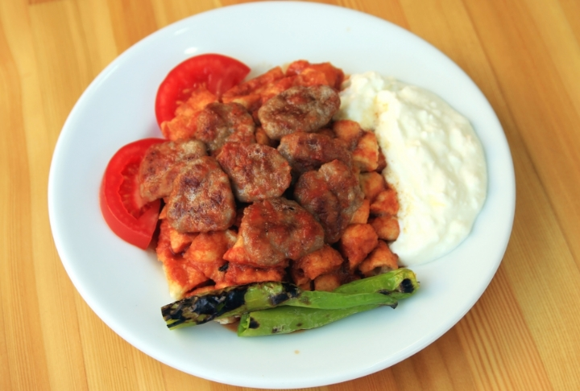

Tarif Bursa'nın en eski pideli köfte ustasından alınmış bir tariftir. Pideli köfte sadece Bursa'ya özgü bir lezzettir. Pideli köfteyi bol tereyağlı yemesi makbuldür efendim. Yanına bırakılan yoğurttan, üzerine dökülen tereyağına kadar hepsinin ayrı ayrı hikayesi vardır.
Tarifime sadık kalırsanız eğer Bursa Kayhan çarşısında yemiş gibi lezzetli bir pideli köfte yaparsınız.
1.İlk önce tırnak pidesini yapalım. Ilık suya maya ve şekeri ilave edip kabarana kadar bekleyelim. Unu kontrollü bir şekilde ekleyip ele yapışmayan bir hamur yoğuruyoruz.

2.Hamuru bir saat beklettikten sonra 2 büyük, 2 küçük bezeye ayırıyoruz. Elimizle hamuru açıp tepsiye koyuyoruz. Pidelerin üzerine elimizle su sürüyoruz ve parmaklarınızla bastırarak şekil veriyoruz.
3.Önceden ısınmış 230 derece fırında 15 dakika kadar pişiriyoruz. Ben biraz kıtır olarak çıkartıyorum. Daha güzel oluyor. Yumuşak isterseniz ona göre ayarlayın.
4.Köfte malzemelerini bir kaba alıp yoğuruyoruz ve şekillendiriyoruz. Salçayı, sıvı yağda kavurup üzerine su ilave edip açıyoruz ve biraz kaynatıyoruz. Tost makinesinde biber ve domatesleri közlüyoruz.
5.Tabaklara yaptığımız pideleri küp küp doğruyoruz ve sıcak olan salçalı sosla ıslatıyoruz. Közlediğimiz biber ve domatesleri de servis tabağına alıyoruz.
6.Köfteleri pişirip servis tabaklarına pay ediyoruz. Tabaklara biber yemek kaşığı yoğurt koyuyoruz ve tereyağını kızdırıp tabakların her yerine gelecek şekilde döküyoruz.
AFİYET OLSUN
ALİHAN YANMAZ